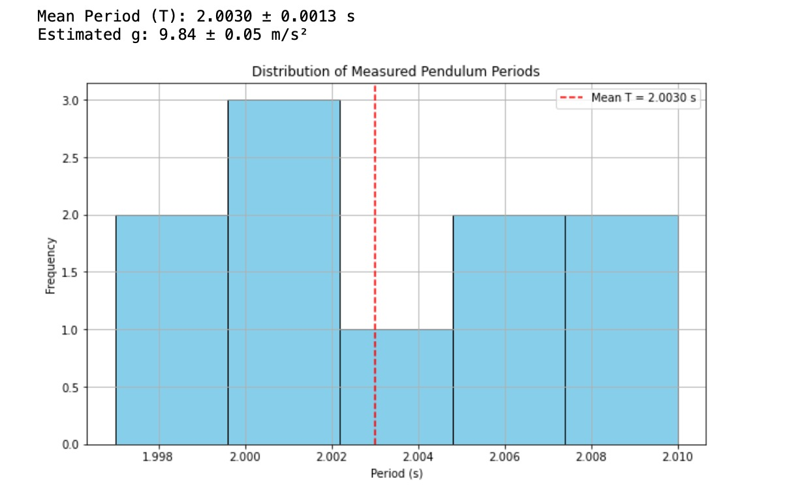

Problem 1
Measuring Earth's Gravitational Acceleration with a Pendulum
Motivation
The gravitational acceleration \( g \) is a fundamental physical constant. One of the classic and accessible methods to estimate it involves analyzing the oscillation of a simple pendulum. The period of a pendulum depends on its length and the gravitational field, making it an ideal experiment to explore measurement accuracy and uncertainty propagation.
Procedure
1. Materials
• String: 1.00 m (±0.005 m) • Weight: Key chain • Stopwatch or smartphone timer (±0.01 s) • Ruler or measuring tape (±0.005 m)
2. Setup
• Suspend the weight using the string from a stable point. • Measure the length \( L \) from the suspension point to the center of the mass. - Example: \( L = 1.000 \, \text{m} \) - Uncertainty: \( \Delta L = \pm 0.005 \, \text{m} \)
3. Data Collection
• Displace pendulum slightly (<15°). • Measure the time for 10 full oscillations (\( T_{10} \)), repeat 10 times.
| Trial | Time for 10 Oscillations \( T_{10} \) (s) |
|---|---|
| 1 | 20.05 |
| 2 | 19.98 |
| 3 | 20.10 |
| 4 | 20.01 |
| 5 | 19.97 |
| 6 | 20.08 |
| 7 | 20.03 |
| 8 | 20.00 |
| 9 | 20.06 |
| 10 | 20.02 |
• Mean of \( T_{10} \):
[
\bar{T}{10} = 20.03 \, \text{s}
]
• Standard deviation:
[
\sigma = 0.041 \, \text{s}
]
• Mean period \( T \):
[
T = \frac{\bar{T}{10}}{10} = 2.003 \, \text{s}
]
• Uncertainty in the mean period:
[
\Delta T = \frac{\sigma}{10} = 0.0041 \, \text{s}
]
Calculations
1. Gravitational acceleration formula:
Substituting:
2. Propagation of Uncertainty
Python Script for Distribution of Measured Pendulum Periods
import numpy as np
import matplotlib.pyplot as plt
# Sample data: 10 measurements of time for 10 oscillations (seconds)
T10_values = np.array([20.05, 19.98, 20.10, 20.01, 19.97, 20.08, 20.03, 20.00, 20.06, 20.02])
L = 1.000 # Length in meters
dL = 0.005 # Uncertainty in length (m)
T_values = T10_values / 10 # Periods (T) for each measurement
# Calculate mean and standard deviation
T_mean = np.mean(T_values)
T_std = np.std(T_values, ddof=1)
dT = T_std / np.sqrt(len(T_values))
# Calculate g
g = (4 * np.pi*2 * L) / (T_mean*2)
# Uncertainty in g using propagation of errors
dg = g * np.sqrt((dL / L)*2 + (2 * dT / T_mean)*2)
print(f"Mean Period (T): {T_mean:.4f} ± {dT:.4f} s")
print(f"Estimated g: {g:.2f} ± {dg:.2f} m/s²")
# Visualization
plt.figure(figsize=(10, 6))
plt.hist(T_values, bins=5, color='skyblue', edgecolor='black')
plt.axvline(T_mean, color='red', linestyle='--', label=f"Mean T = {T_mean:.4f} s")
plt.title("Distribution of Measured Pendulum Periods")
plt.xlabel("Period (s)")
plt.ylabel("Frequency")
plt.legend()
plt.grid(True)
plt.show()
Visualization Output:

Results
| Quantity | Value |
|---|---|
| Pendulum Length \( L \) | 1.000 ± 0.005 m |
| Mean Period \( T \) | 2.003 ± 0.0041 s |
| Estimated \( g \) | 9.85 ± 0.06 m/s² |
Analysis & Discussion
Comparison with Standard Value
• Standard gravitational acceleration: \( 9.80665 \, \text{m/s}^2 \) • Our value: \( 9.85 \, \text{m/s}^2 \), which is within acceptable range considering experimental uncertainties.
Sources of Uncertainty
• Length Measurement: Any small error in identifying the pivot or center of mass can significantly affect \( g \). • Timing: Human reaction time affects stopwatch usage. Averaging over 10 periods reduces this impact. • Small-angle Assumption: If the angle exceeds 15°, the approximation \( \sin\theta \approx \theta \) becomes invalid. • Air Resistance & Friction: Neglected in theory but present in reality.
Conclusions
• The pendulum is a reliable tool for measuring \( g \) when careful attention is paid to length and time measurements. • Propagated uncertainties provide a meaningful range for \( g \), supporting the robustness of the result.